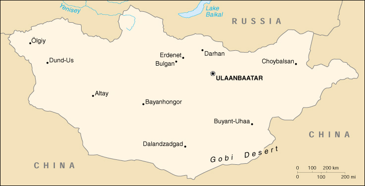

{kind=link}


| Mongolia |
|
|  | |
| Introduction |
Background: Long a province of China, Mongolia won its independence in 1921 with Soviet backing. A communist regime was installed in 1924. During the early 1990s, the ex-communist Mongolian People's Revolutionary Party (MPRP) gradually yielded its monopoly on power. In 1996, the Democratic Union Coalition (DUC) defeated the MPRP in a national election and has attempted to establish a number of reforms to modernize the economy. However, many former communists retain key posts and implementation has been difficult.
| Geography |
Location: Northern Asia, between China and Russia
Geographic coordinates: 46 00 N, 105 00 E
Map references: Asia
Area:
total:
1.565 million sq km
land:
1.565 million sq km
water:
0 sq km
Area - comparative: slightly smaller than Alaska
Land boundaries:
total:
8,114 km
border countries:
China 4,673 km, Russia 3,441 km
Coastline: 0 km (landlocked)
Maritime claims: none (landlocked)
Climate: desert; continental (large daily and seasonal temperature ranges)
Terrain: vast semidesert and desert plains; mountains in west and southwest; Gobi Desert in southeast
Elevation extremes:
lowest point:
Hoh Nuur 518 m
highest point:
Tavan Bogd Uul 4,374 m
Natural resources: oil, coal, copper, molybdenum, tungsten, phosphates, tin, nickel, zinc, wolfram, fluorspar, gold
Land use:
arable land:
1%
permanent crops:
0%
permanent pastures:
80%
forests and woodland:
9%
other:
10% (1993 est.)
Irrigated land: 800 sq km (1993 est.)
Natural hazards: dust storms can occur in the spring; grassland fires
Environment - current issues: limited natural fresh water resources; policies of the former communist regime promoting rapid urbanization and industrial growth have raised concerns about their negative effects on the environment; the burning of soft coal in power plants and the lack of enforcement of environmental laws have severely polluted the air in Ulaanbaatar; deforestation, overgrazing, the converting of virgin land to agricultural production have increased soil erosion from wind and rain; desertification and mining activities have also had a deleterious effect on the environment
Environment - international agreements:
party to:
Biodiversity, Climate Change, Climate Change-Kyoto Protocol, Desertification, Endangered Species, Environmental Modification, Hazardous Wastes, Law of the Sea, Nuclear Test Ban, Ozone Layer Protection, Wetlands
signed, but not ratified:
none of the selected agreements
Geography - note: landlocked; strategic location between China and Russia
| People |
Population: 2,650,952 (July 2000 est.)
Age structure:
0-14 years:
34% (male 461,719; female 447,426)
15-64 years:
62% (male 816,851; female 816,651)
65 years and over:
4% (male 46,682; female 61,623) (2000 est.)
Population growth rate: 1.54% (2000 est.)
Birth rate: 21.53 births/1,000 population (2000 est.)
Death rate: 6.14 deaths/1,000 population (2000 est.)
Net migration rate: 0 migrant(s)/1,000 population (2000 est.)
Sex ratio:
at birth:
1.05 male(s)/female
under 15 years:
1.03 male(s)/female
15-64 years:
1 male(s)/female
65 years and over:
0.76 male(s)/female
total population:
1 male(s)/female (2000 est.)
Infant mortality rate: 41.22 deaths/1,000 live births (2000 est.)
Life expectancy at birth:
total population:
67.25 years
male:
64.98 years
female:
69.64 years (2000 est.)
Total fertility rate: 2.4 children born/woman (2000 est.)
Nationality:
noun:
Mongolian(s)
adjective:
Mongolian
Ethnic groups: Mongol 90%, Kazakh 4%, other 6%
Religions:
predominantly Tibetan Buddhist, Muslim 4%
note:
previously limited religious activity because of communist regime
Languages: Khalkha Mongol 90%, Turkic, Russian
Literacy:
definition:
age 15 and over can read and write
total population:
82.9%
male:
88.6%
female:
77.2% (1988 est.)
| Government |
Country name:
conventional long form:
none
conventional short form:
Mongolia
local long form:
none
local short form:
Mongol Uls
former:
Outer Mongolia
Data code: MG
Government type: republic
Capital: Ulaanbaatar
Administrative divisions: 18 provinces (aymguud, singular - aymag) and 3 municipalities* (hotuud, singular - hot); Arhangay, Bayanhongor, Bayan-Olgiy, Bulgan, Darhan*, Dornod, Dornogovi, Dundgovi, Dzavhan, Erdenet*, Govi-Altay, Hentiy, Hovd, Hovsgol, Omnogovi, Ovorhangay, Selenge, Suhbaatar, Tov, Ulaanbaatar*, Uvs
Independence: 13 March 1921 (from China)
National holiday: National Day, 11 July (1921)
Constitution: 12 February 1992
Legal system: blend of Russian, Chinese, Turkish, and Western systems of law that combines aspects of a parliamentary and presidential system; constitution ambiguous on judicial review of legislative acts; has not accepted compulsory ICJ jurisdiction
Suffrage: 18 years of age; universal
Executive branch:
chief of state:
President Natsagiyn BAGABANDI (since 20 June 1997)
head of government:
Prime Minister Rinchinnyamin AMARJARGAL (since 30 August 1999)
cabinet:
Cabinet appointed by the State Great Hural in consultation with the president
elections:
president nominated by parties in the State Great Hural and elected by popular vote for a four-year term; election last held 18 May 1997 (next to be held summer 2001); following legislative elections, the leader of the majority party or majority coalition is usually elected prime minister by the State Great Hural; election last held 30 August 1999 (next to be held NA)
election results:
Natsagiyn BAGABANDI elected president; percent of vote - Natsagiyn BAGABANDI (MPRP) 60.8%, Punsalmaagiyn OCHIRBAT (MNDP and MSDP) 29.8%, Jambyn GOMBOJAV 6.6%; Rinchinnyamin AMARJARGAL elected prime minister by a vote in the State Great Hural of 50 to 2
Legislative branch:
unicameral State Great Hural (76 seats; members elected by popular vote to serve four-year terms)
elections:
last held 30 June 1996 (next to be held NA June 2000)
election results:
percent of vote by party - DUC 66%, MPRP 33%, MCP 1%; seats by party - DUC 50 (MNDP 34, MSDP 13, independents 3), MPRP 25, MCP 1
Judicial branch: Supreme Court, serves as appeals court for people's and provincial courts, but to date rarely overturns verdicts of lower courts, judges are nominated by the General Council of Courts for approval by the State Great Hural
Political parties and leaders: Democratic Union Coalition or DUC (includes the MNDP and the MSDP); Independence Party [leader NA]; Mongolian Conservative Party or MCP [JARGALSAIHAN]; Mongolian Democratic New Socialist Party or MDNSP [B. ERDENEBAT, chairman]; Mongolian Democratic Renaissance Party or MDRP [BYAMBASUREN, chairman]; Mongolian National Democratic Party or MNDP [R. AMARJARGAL, chairman; B. DELGERMAA, general secretary]; Mongolian People's Revolutionary Party or MPRP [N. ENKHBAYAR, chairman; L. ENEBISH, general secretary]; Mongolian Republican Party or MRP [B. JARGALSAIHAN]; Mongolian Social Democratic Party or MSDP [Radnaasumbereliyn GONCHIGDORJ, chairman; N. ALTANKHUYAG, general secretary]; Mongolian United Heritage Party or UHP [B. JAMTSAI] (includes the United Party of Herdsman and Farmers, Independence Party, Traditional United Conservative Party, and Mongolian United Private Property Owners Party); Mongolian United Private Property Owners Party [leader NA]); United Party of Herdsman and Farmers [leader NA]; Traditional United Conservative Party [leader NA]; Workers' Party [leader NA]
International organization participation: AsDB, ASEAN (observer), CCC, ESCAP, FAO, G-77, IAEA, IBRD, ICAO, ICFTU, ICRM, IDA, IFAD, IFC, IFRCS, ILO, IMF, IMO, Intelsat, Interpol, IOC, ISO, ITU, NAM, OPCW, UN, UNCTAD, UNESCO, UNIDO, UPU, WHO, WIPO, WMO, WToO, WTrO
Diplomatic representation in the US:
chief of mission:
Ambassador Jalbuugiyn CHOINHOR
chancery:
2833 M Street NW, Washington, DC 20007
telephone:
[1] (202) 333-7117
FAX:
[1] (202) 298-9227
consulate(s) general:
New York
Diplomatic representation from the US:
chief of mission:
Ambassador Alphonse F. LA PORTA
embassy:
inner north side of the Big Ring, just west of the Selbe Gol, Ulaanbaatar
mailing address:
c/o American Embassy Beijing, Micro Region 11, Big Ring Road, C. P. O. 1021, Ulaanbaatar 13; PSC 461, Box 300, FPO AP 96521-0002
telephone:
[976] (1) 329095
FAX:
[976] (1) 320776
Flag description: three equal, vertical bands of red (hoist side), blue, and red; centered on the hoist-side red band in yellow is the national emblem ("soyombo" - a columnar arrangement of abstract and geometric representation for fire, sun, moon, earth, water, and the yin-yang symbol)
| Economy |
Economy - overview: Economic activity traditionally has been based on agriculture and breeding of livestock. Mongolia also has extensive mineral deposits: copper, coal, molybdenum, tin, tungsten, and gold account for a large part of industrial production. Soviet assistance, at its height one-third of GDP, disappeared almost overnight in 1990-91, at the time of the dismantlement of the USSR. Mongolia was driven into deep recession, which was prolonged by the Mongolian People's Revolutionary Party's (MPRP) reluctance to undertake serious economic reform. The Democratic Union Coalition (DUC) government has embraced free-market economics, easing price controls, liberalizing domestic and international trade, and attempting to restructure the banking system and the energy sector. Major domestic privatization programs have been undertaken, as well as fostering of foreign investment through international tender of the oil distribution company, a leading cashmere company, and banks. Reform has been held back by the ex-communist MPRP opposition and by the political instability brought about through four successive governments under the DUC. Economic growth picked up in 1997-99 after stalling in 1996 due to a series of natural disasters and declines in world prices of copper and cashmere. Public revenues and exports collapsed in 1998 and 1999 due to the repercussions of the Asian financial crisis. In August and September 1999, the economy suffered from a temporary Russian ban on exports of oil and oil products. Mongolia joined the World Trade Organization (WTrO) in 1997. The international donor community pledged over $300 million per year at the last Consultative Group Meeting, held in Ulaanbaatar in June 1999.
GDP: purchasing power parity - $6.1 billion (1999 est.)
GDP - real growth rate: 3.5% (1999 est.)
GDP - per capita: purchasing power parity - $2,320 (1999 est.)
GDP - composition by sector:
agriculture:
33%
industry:
24%
services:
43% (1999 est.)
Population below poverty line: 40% (1999 est.)
Household income or consumption by percentage share:
lowest 10%:
2.9%
highest 10%:
24.5% (1995)
Inflation rate (consumer prices): 9.5% (1998)
Labor force: 1.256 million (1998)
Labor force - by occupation: primarily herding/agricultural
Unemployment rate: 4.5% (1998)
Budget:
revenues:
$260 million
expenditures:
$366 million, including capital expenditures of $NA (1999)
Industries: construction materials, mining (particularly coal and copper); food and beverages, processing of animal products
Industrial production growth rate: 3.2% (1998)
Electricity - production: 2.66 billion kWh (1998)
Electricity - production by source:
fossil fuel:
100%
hydro:
0%
nuclear:
0%
other:
0% (1998)
Electricity - consumption: 2.816 billion kWh (1998)
Electricity - exports: 0 kWh (1998)
Electricity - imports: 342 million kWh (1998)
Agriculture - products: wheat, barley, potatoes, forage crops; sheep, goats, cattle, camels, horses
Exports: $316.8 million (f.o.b., 1998)
Exports - commodities: copper, livestock, animal products, cashmere, wool, hides, fluorspar, other nonferrous metals
Exports - partners: China 30.1%, Switzerland 21.5%, Russia 12.1%, South Korea 9.7%, US 8.1% (1998)
Imports: $472.4 million (f.o.b., 1998)
Imports - commodities: machinery and equipment, fuels, food products, industrial consumer goods, chemicals, building materials, sugar, tea
Imports - partners: Russia 30.6%, China 13.3%, Japan 11.7%, South Korea 7.5%, US 6.9% (1998)
Debt - external: $715 million (1998 est.)
Economic aid - recipient: $250 million (1998 est.)
Currency: 1 tughrik (Tug) = 100 mongos
Exchange rates: tughriks (Tug) per US$1 - 1,070.39 (December 1999), 1,072.37 (1999), 840.83 (1998), 789.99 (1997), 548.40 (1996), 448.61 (1995)
Fiscal year: calendar year
| Communications |
Telephones - main lines in use: 93,800 (1998)
Telephones - mobile cellular: NA
Telephone system:
domestic:
NA
international:
satellite earth station - 1 Intersputnik (Indian Ocean Region)
Radio broadcast stations: AM 12, FM 2, shortwave 13 (1998)
Radios: 360,000 (1997)
Television broadcast stations: 1 (plus 18 provincial repeaters) (1997)
Televisions: 118,000 (1997)
Internet Service Providers (ISPs): NA
| Transportation |
Railways:
total:
1,928 km
broad gauge:
1,928 km 1.524-m gauge (1994)
Highways:
total:
49,250 km
paved:
1,674 km
unpaved:
47,576 km (1998 est.)
note:
much of the unpaved rural road system consists of rough cross-country tracks
Waterways: 400 km of principal routes (1999)
Ports and harbors: none
Airports: 34 (1994 est.)
Airports - with paved runways:
total:
8
2,438 to 3,047 m:
7
under 914 m:
1 (1994 est.)
Airports - with unpaved runways:
total:
26
over 3,047 m:
3
2,438 to 3,047 m:
5
1,524 to 2,437 m:
10
914 to 1,523 m:
3
under 914 m:
5 (1994 est.)
| Military |
Military branches: Mongolian People's Army (includes Internal Security Forces and Border Guards), Air Force, Civil Defense troops
Military manpower - military age: 18 years of age
Military manpower - availability:
males age 15-49:
727,844 (2000 est.)
Military manpower - fit for military service:
males age 15-49:
473,326 (2000 est.)
Military manpower - reaching military age annually:
males:
29,364 (2000 est.)
Military expenditures - dollar figure: $20 million (FY97)
Military expenditures - percent of GDP: 2% (FY97)
| Transnational Issues |
Disputes - international: none